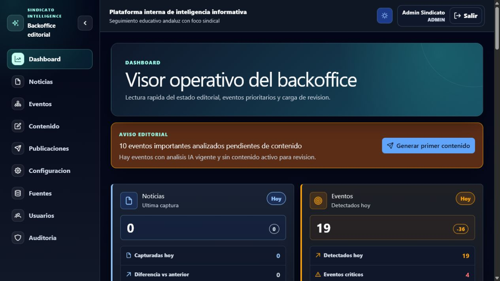
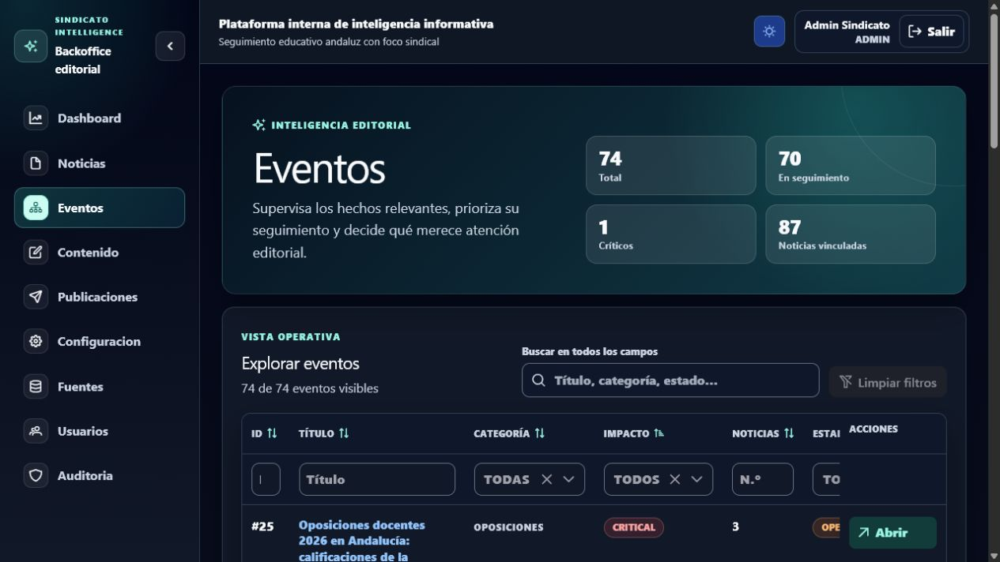
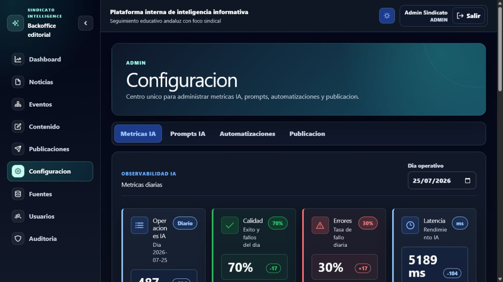

n8n · WF-01
RSS/XML
Normalización
Alta masiva
TFM · Inteligencia aplicada
La noticia es materia prima.
El evento es la unidad de decisión.
El problema
Revisar RSS, detectar duplicados, clasificar y redactar consume tiempo y fragmenta la visión del asunto.
La consecuencia
5 noticias similares pueden acabar en 5 decisiones y 5 publicaciones.
La plataforma consolida antes de decidir.
Arquitectura
ENTRADA
Fuentes RSS
n8n · WF-01
Captura XML
POST /news/bulk
SPRING BOOT · MONOLITO MODULAR
domain · application · infrastructure · api
Reglas de negocio
Casos de uso
JWT y roles
IA y validación
Automatizaciones
Telegram y auditoría
SALIDAS
Angular
PostgreSQL
Gemini opcional
Telegram
MailHog
DDD · Clean Architecture · PostgreSQL + Flyway
03Modelo de dominio
La IA propone. El dominio valida. Una persona aprueba.
04Producto operativo
• métricas del día
• avisos editoriales
• eventos críticos
• automatizaciones manuales
• acceso por rol
La UI no decide: expone contexto y acciones de dominio.

Backoffice


Automatización e IA
n8n · WF-01
RSS/XML
Normalización
Alta masiva
Spring · WF-02 a WF-04
Clasificar
Agrupar eventos
Analizar
Spring · WF-05/06
Generar
Revisar y aprobar
Publicar
Prompts versionados · respuesta JSON validada · métricas por operación
07Seguridad y gobierno
JWT de 15 min
Refresh de 7 días
Roles ADMIN / EDITOR
Rate limiting de autenticación
Secretos fuera de Git
Auditoría de acciones
La IA nunca aprueba ni publica por sí sola.
Calidad
Baterías automatizadas + build + validadores + Docker.
.\tfm-start.ps1 → .\tfm-check.ps1
09Conclusión
Sindicato Intelligence convierte noticias dispersas en eventos trazables, análisis consolidados y contenido listo para revisión.
github.com/titiantonio/sindicato-intelligence